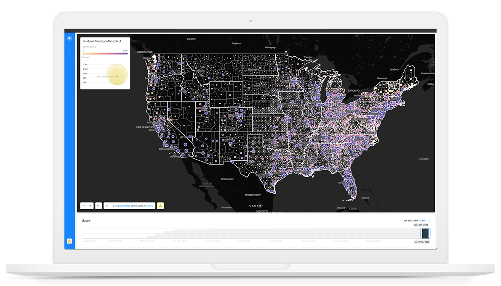

Every COVID dashboard showed the past. This one showed the future.
At the height of the pandemic, existing COVID-19 visualisations showed cumulative case counts — useful for understanding what had happened, but limited for anticipating what was about to happen. They also stripped out population context, making it impossible to distinguish a hotspot from a dense metro area.
This project set out to build something different: visualisations that combined spatial predictive analysis with county-level population data to forecast emerging hotspots and mask-use correlations in an interactive, filterable format.

COVID-19 Predictive Spatial Analysis · Dashboard overview · Carto platform
Spatial Markov Chains for forward-looking trend modelling.
County-level case data was cleaned and prepared in OpenRefine and Carto. The predictive component used the Predict Trends and Volatility (PTV) method with Spatial Markov Chains — a statistical technique that factors in neighbouring county trends when forecasting a given county's trajectory.
Point size was chosen deliberately to represent county population — a design decision that users in testing immediately understood and appreciated. This gave the visualisation a contextual layer that flat choropleth maps couldn't provide.
Three visualisations. One dashboard. Full temporal control.
The project produced three separate but linked visualisations, each answering a different question about the spread and trajectory of COVID-19.
- Historical case trends — county-level case counts over time, with population-normalised point sizing to contextualise density.
- Predictive hotspot analysis — forward-looking trend classification (trending up, trending down, volatile) using spatial Markov chain outputs.
- Mask-use correlation — a third visualisation overlaying mask compliance survey data against predicted case trajectories.

Visualisation 01 · Historical case trends · Population-sized point map

Visualisation 02 · Predictive analysis · Trend classification by county
A date widget provided temporal filtering across all three views, allowing users to track how predictions evolved over the course of the dataset. The colorblind-safe palette was a non-negotiable accessibility requirement for public health data.

Dashboard · Desktop view · Carto interactive visualisation
Two participants. Specific, addressable feedback.
Two participants completed a think-aloud usability study on the interactive visualisations. Despite the small sample, both sessions produced specific, actionable feedback that shaped the final iteration.
The testing session also confirmed that the predictive layer was the most valued feature — users found forward-looking trend data meaningfully more useful than the historical case counts available on other dashboards.
More useful than existing dashboards. Specific improvements identified.
Both participants rated the visualisations as more useful than the COVID dashboards they had been using — specifically citing the population context and predictive trend layer as differentiating features.
The iteration backlog from testing was specific and implementable: darker basemap, state border overlays, tooltip labels with plain-language trend descriptions, and increased minimum point size. The project established a process for data visualisation work that I've applied since: design for the non-expert reader first, and test with people who aren't already comfortable reading data.